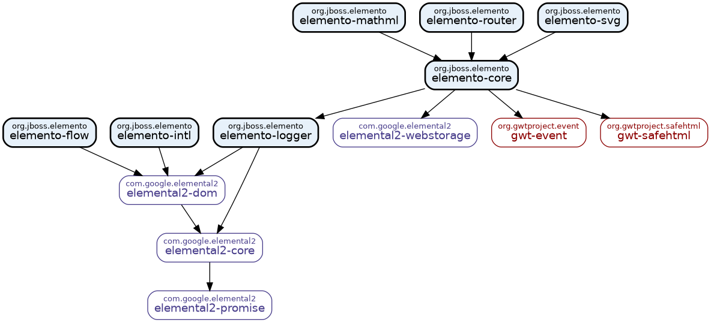

Elemento 2.4.6 API
Elemento is a modern, type-safe Java library for building web user interfaces using
GWT and J2CL.
It provides a fluent builder API that makes creating and manipulating DOM elements natural and intuitive,
eliminating the verbosity of traditional DOM manipulation.
Overview
Elemento simplifies web development by offering:
- Fluent Builder API: Create complex DOM hierarchies with clean, readable code
- Type Safety: Leverage Java's type system to catch errors at compile time
- Modular Architecture: Choose only the modules you need for your application
- Modern Web Standards: Support for Custom Elements, SVG, MathML, and more
- Developer Friendly: Intuitive APIs that reduce boilerplate and improve productivity
Modules

Elemento is structured as a set of modules with elemento-core at the foundation. The core module provides the essential builder API for creating and manipulating HTML elements, event handling, type-safe CSS selectors, and utilities for DOM traversal and manipulation.
Additional optional modules build on top of the core: elemento-router for single-page application routing, elemento-flow for asynchronous task control flow, elemento-logger for lightweight logging, elemento-intl for internationalization support, elemento-svg for SVG element creation, and elemento-mathml for mathematical notation. Each module can be used independently based on your application's needs.
Packages
Package
Description
Elemento simplifies working with GWT Elemental2 by providing a fluent API for building HTML element hierarchies, typesafe CSS
selectors, and helper methods for common DOM operations.
Provides an API for executing asynchronous tasks in parallel, sequentially, or repeatedly based on conditions.
Provides type-safe Java mappings for the JavaScript
Intl API,
enabling locale-aware formatting of dates, times, numbers, lists, durations, and relative times.
Provides a lightweight logging wrapper around
console.log that uses categories, log levels, and
a predefined log format.Provides support for creating and manipulating MathML (Mathematical Markup Language) elements using a fluent builder API.
Provides a minimally invasive client-side routing solution for single-page applications.
Provides classes and interfaces for creating and manipulating SVG (Scalable Vector Graphics) elements using a fluent
builder API.